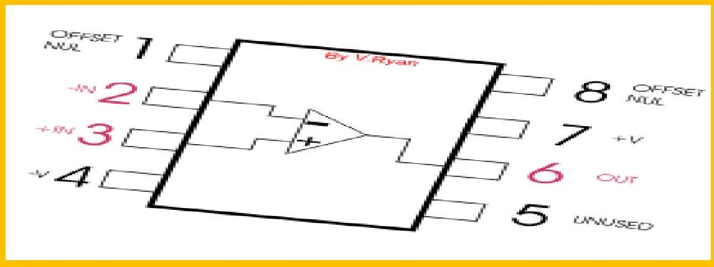

-
Chapter 1: OPTO ELECTRONICS
-
Chapter 2: INTEGRATED CIRCUITS
-
Chapter 3: INTRODUCTION TO OP-AMP
-
Chapter 4: OPERATIONAL AMPLIFIER CIRCUITS & FEEDBACK CONFIGURATIONS
-
Chapter 5: APPLICATION OF OPERATIONAL AMPLIFIER & TIMER CIRCUITS
-
Chapter 6: IC VOLTAGE REGULATORS
-
Chapter 7: PRINTED CIRCUIT BOARD (PCB)